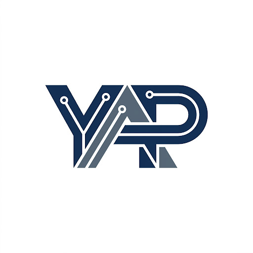

Yoryi Abreu Portllo
Full Stack Developer | Backend & AI Integration | SaaS Builder
Desarrollador Full Stack con enfoque en backend y arquitectura de sistemas, especializado en la construcción de aplicaciones SaaS y la integración de inteligencia artificial en productos reales. Trabajo con tecnologías como Next.js, Node.js y Python, desarrollando soluciones escalables y diseñando servicios que integran IA para automatización, asistentes y mejora de procesos. Actualmente desarrollo una plataforma SaaS multi-tenant, donde defino la arquitectura del sistema y la integración de inteligencia artificial dentro del flujo del producto.
badge Perfil
Desarrollador Full Stack con enfoque en backend y arquitectura de sistemas. Actualmente desarrollo una plataforma SaaS multi-tenant, definiendo la arquitectura del sistema y cómo la inteligencia artificial se integra dentro del flujo del producto. Combino experiencia en liderazgo y gestión con habilidades técnicas para construir sistemas eficientes, robustos y orientados a resultados.
work Experiencia
Full Stack Developer — DATAKI.CO
2023 — 2026- Desarrollo de aplicaciones web full stack para clientes internacionales, participando en el diseño de soluciones y en la arquitectura del frontend y backend.
- Implementación de interfaces modernas con React y Angular, optimizando rendimiento, usabilidad y experiencia de usuario en entornos de alta exigencia.
- Mantenimiento evolutivo y correctivo de plataformas digitales, asegurando estabilidad, escalabilidad y cumplimiento de estándares para marcas como Oreo, Glade y Cinépolis.
Frontend Developer — Realty Candy
2021 — 2023- Desarrollo de plataformas web para el sector inmobiliario en el mercado estadounidense, utilizando WordPress y PHP con integración de IDX Broker.
- Implementación de funcionalidades personalizadas y optimización de rendimiento y experiencia móvil, mejorando la usabilidad y tiempos de carga.
- Aplicación de estándares de accesibilidad (ADA) y mantenimiento evolutivo y correctivo, asegurando estabilidad y continuidad operativa.
WordPress / Frontend Developer — Nonadesign & BH Software
2020 — 2019- Personalización de themes WordPress, integraciones en PHP y desarrollo responsive con Sass, Flexbox, Grid y Bootstrap.
- Consumo y creación de APIs REST en Node.js y PHP, con soporte sobre bases de datos MySQL.
- Trabajo colaborativo con Git y desarrollo de componentes interactivos con JavaScript y React.
Gerente Regional de Operaciones — MOVILNET
1993 — 2018- Gestión integral de recursos y coordinación de equipos técnicos, asegurando la continuidad operativa en entornos de alta exigencia y gran escala.
- Dirección de proyectos estratégicos, definiendo prioridades y planes de ejecución alineados a objetivos de calidad, eficiencia y rendimiento.
- Supervisión de equipos multidisciplinarios, impulsando el cumplimiento de metas operativas y la mejora continua de productividad.
- Optimización de procesos y recursos humanos y técnicos, fortaleciendo estrategias de mantenimiento preventivo, correctivo y predictivo en redes.
- Toma de decisiones estratégicas orientadas a resultados, manteniendo altos niveles de eficiencia operativa y satisfacción de clientes y equipos.
deployed_code Proyectos destacados
BuildingOS / SaaS de gestión de condominios
Plataforma SaaS multi-tenant para administración de edificios y condominios, con módulos de pagos, unidades, comunicación e integración de asistentes con IA.
AI SEO Tools
Suite de herramientas SEO con IA, incluyendo renombrador inteligente de imágenes, generación de títulos y descripciones y módulos de automatización.
school Educación
Ingeniero en Electrónica
Técnico Superior en Electricidad
Formación complementaria en liderazgo, gestión de equipos, resolución de conflictos y project management.